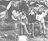

Evenhomesteaders need to relax and enjoy themselves from time to time, right?And almost everybody these days wants to cut his or her cost of living.So how about a little do-it-yourself entertainment?
Andthat's what this column is all about. Down-home music that you can make. . . and the instruments (which, in some cases, you can also make!) toplay that music on.
Wemay also publish some songs, discuss music as a potential home business,run discographies, bibliographies, and/or include whatever other do-it-yourselfmusic topics you'd like to see.
Theimportant thing is that this is your column. If you like it, write to meand let me know. If you have some ideas for this feature, let me know that.I'm open to any suggestions or information you care to contribute. I'lleven try to answer your questions about down-home music . . . but-- bothfor the benefit of all MOTHER's readers and to ease my correspondence load--I'lldeal with those questions, whenever possible, here in this column . . .rather than in personal letters.
Addressyour correspondence--for this column and this column only--to Marc Bristol,31722 N.E. 180th Place, Duvall, Wash. 98019.
Well,folks, I've been bringing you Homegrown Music for over two years now! And,in those dozen or so issues of MOTHER, I've tried to share every bit ofuseful information--about musical products, services, kits, etc.--that Icould uncover. Yet there have been some items that reached me too lateto be included in a column devoted to their particular subject ... andothers that I never got around to classifying at all.
But--whileI was sifting through my files recently--I discovered that some of the long-forgottenmorsels were simply too good to pass up . . . so I decided to put togethera sort of "soup-to-nuts" column, including all of my up-till-now neglectedtidbits and afterthoughts.
CompleteBanjo Repair by Larry Sandberg (Oak Publications, Dept. TMEN, 33 West60th Street, New York, New York 10023), 112 pages, paperback, $6.95. AsI was reviewing guitar repair manuals for my column in MOTHER NO. 59, I wonderedwhy no one had ever written a similar volume about the banjo. I didn'thave to wonder long, though . . . because--very soon afterward--I receiveda copy of Larry Sandberg's book from Oak Publications. (They're the samefolks who brought us Complete Guitar Repair by Hideo Kamimoto. . . and--in fact--the firm is the largest producer of instructional folkmusic books in the country.)
Thismanual--which fills a large gap in the literature of musical instrumentrepair--would prove interesting to just about any banjo enthusiast. It paysa lot of attention to the special problems of the bluegrass instrument'sunique hardware, woodwork, and tone. Andeven though Sandberg's publicationdeals only with five-string banjos-it is applicable to other varieties,as well . . . since most repairs are performed identically, regardlessof the number of strings.
Still,I'd like to see an even more comprehensive book about the banjo's history,including tuning and chord information for all types of the instrument,plus some photos of its contemporary African relatives. Are there any banjoplayers--and writers--out there who are interested . . . or anyone who knowsof such a book that's already been published? PianoTuning by J. Cree Fischer (Dover Publications, Ins., Dept. TMEN, 180Varick Street, New York, New York 10014), 201 pages, paperback, $3.00.Is the old family heirloom a bit out of tune? Even more than a bit? Althoughhiring a piano tuner isn't really as expensive as you might imagine, youstill can't beat the cost of "doin' it yourself" . . . or the satisfactionof completing an intricate job with your own two hands.
AlthoughFischer's little book was first published way back in 1907, it's stillchock-full of timely information on the proper way to tune a piano . .. whether the instrument is an upright, square, or grand. The volume issubtitled "a simple and accurate method for amateurs", and that's exactlywhat it is . . . the author teaches you--using plain English--the easiesttechnique for "setting the tem. per" of your piano. You'll even learn howto remove and repair the entire "action" (or key and hammer works) of astandard instrument . . . and that skill--who knows?--could lead to a profitablehome business in restoring old, "worn-out" keyboard musicmakers.
HammeredDulcimer by Peter Pickow (also from Oak Publications), 111 pages, paperback,$5.95. The hammered dulcimer--actually an ancestor of the piano--is a tabletopfolk instrument played by striking its strings with two wooden hammers.If you ordered Henry the Fiddler's album that I mentioned in MOTHER NO.60, you'll have heard the dulcimer's delicate, mystical tones on the veryfirst cut . . . which is a medley of "Mississippi Sawyer" and "Over theWaterfall".
Sinceits suitability to fiddle tunes and contradance numbers has become recognized,the traditional mountain instrument is attracting a lot of attention thesedays. In fact, you may even own one yourself, and could be looking forsome instruction and simple tunes to try . . . if so, Peter Pickow's bookis just what you need. It opens with a brief introduction to the tablature(notation) system used for hammered dulcimer music and then moves intoa section of scales and techniques for your practice sessions. Followingthis introductory material, the major portion of the book is devoted toa series of songs, which gradually increase in musical complexity and performingdifficulty. At the end of the tome you'll find a bibliography, a discography,and a handy list of resources (including places to get books, records,and kits, and a list of festivals where you can hear the instrument played).
Forfurther information about the hammered dulcimer, MOTHER-reader Mary Sutter--fromForest Park, Illinois-suggests you write to Andy's Front Hall, Dept. TMEN,RD 1, Wormer Road, Voorheesville, New York 12186. The good folks thereoffer a wide selection of books, albums, and other folk music items . .. and Mary says she's had satisfactory dealings with them for years. (Youcan also order hammered dulcimer kits, parts, and--in some cases--completedinstruments from the mail order houses I mentioned in this column in issue55.)
TheIllustrated Encyclopedia of Country Music by Roy Thompson and FredDeller (Harmony Books, Dept. TMEN, One Park Avenue, New York, New York10016), 256 pages, paperback, $7.95. This is one for all of you "commercial"country music enthusiasts who are just as interested in the performersthemselves as you are in the music they make. Among the two or three "encyclopedic"books compiled on the Nashville scene, this one's probably the best.
TheIllustrated Encyclopedia of Country Music covers, in alphabetical order,over 400 of the famous (and not quite famous) . . . with a picture or twoof each artist, cover reproductions of his or her important albums, anda few paragraphs about the musician's career.
Bluegrassfans, take note! You can now receive monthly updates on your musical passion,because I've found a couple of good magazines that report on "pickin' "happenings in various parts of the country. Wisconsin Bluegrass News --editedby Dick and Lisa Brandlien--is a fine newsprint journal that features articleson local bands and upcoming festivals, as well as concert and record reviews.An annual subscription (eleven issues . . . the January and February numbersare combined) costs $5.00. Write Wisconsin Bluegrass News , Dept.TMEN, N27 W29909 Maple Avenue, Pewaukee, Wisconsin 53072.
Outhere on the West Coast, another periodical is promoting the "foot-stompin'" cause. About a year ago, I reviewed Friends of Mountain Music in this column . . . well, the magazine was bought out not long after that,and its name was changed to Golden West Bluegrass . Look to the newpublication for articles on groups, interviews with pickers and instrumentbuilders, festival information, and reviews. If you'd like to receive acopy of the magazine, write Golden West Bluegrass , Dept.TMEN, P.O. Box 341, Bonsall, California 92003 . . . and send a dollar tohelp 'em keep on keepin' on.
Alltypes of stringed instruments appear in the pages of Frets . . .which is produced by Guitar Player Publications. The bulk of the magazineconsists of regular columns . . . such as Mike Auldridge's words aboutdobro. Byron Berline's column on fiddle, and David Grisman's on mandolin.(Auldridge, by the way, has released several fine albums on the FlyingFish and Takoma labels. Although I received copies of those discs too lateto review them in my column on records in MOTHER NO. 54, they've all earnedmy highest recommendation.)
Othermonthly features in Frets include record reviews, interviews withpopular folk musicians, and specials . . . such as the recent column onthe hammered dulcimer, which introduced a modification of Peter Pickow'stablature system and examined the differences between the hammered dulcimerand its mountain cousin (which is strummed rather than struck). Frets isavailable for $18 a year (12 issues). If you're interested, write to: Frets ,Dept. TMEN, Guitar Player International, 20605 Lazaneo, Cupertino, California95014.
Yet another West Coast magazine, called The Mix , is designedto appeal to songwriters, musicians, aspiring recording engineers, andproducers alike. Covering all aspects of professional recording--from hardwareto production techniques-- The Mix fills a need for more knowledgeand communication in this field of rapidly expanding technology. The publicationfeatures interviews with producers, engineers, and musicians . . . plusarticles on the equipment needed for analogue (and the newer digital) recordingsystems. You'll also find--as a continuing feature--a comprehensive listingof all professional recording studios . . . broken down by geographicalregions. (Last year, the magazine covered the West Coast outfits in oneissue, New York's in another, and Nashville/Memphis studios in a third.)
Ifyou live in or near a large city, you may be able to find The Mix in record stores. If it's not available, though, just mention it to thestore manager . . . he or she can probably get it for you. The magazineis also offered through the mail, of course, and--if you're at all interestedin the technical end of the recording business-- The Mix is well worthits subscription price of $15 a year for 12 issues. Just write to: TheMix , Dept. TMEN, 956 San Pueblo, Albany, California 94706.
And,finally, I'd like to mention a word or two about my own project.As I've said before, I'm planning to write a future column on producingyour own albums. Well, as research for that piece, I'm thinking of bringingout a record of "Homegrown Music". It seems that a lot of you have writtento tell me you'd like to see song arrangements printed in this column .. . and I'd feel a lot better about doing that if I could also offer youa chance to listen to the ditties at the same time. After all, many ofus learned our music by ear, and--though it helps to look at the notes writtenout on a staff--we still need to hear those tricky rhythm patterns beforewe can imitate (and eventually master) them.
Theproposed Homegrown disc would probably feature some familiar, old-timeytunes (such as "Oh Suzanna" and "Polly Wolly Doodle") . . . along withsome new and original MOTHER-lifestyle songs. After the album is released,I would include the written arrangements in this column ( one or two ata time ) , so that you and your friends could join in with the recordingon your tub basses, jugs, kazoos, washboards, mandolins, banjos, guitars. . . or whatever!
So--ifyou're interested--get in touch! I'll welcome any ideas, comments, or suggestionsyou may have about this project. Send me your name and address, and I'llkeep you posted on its progress. In my opinion, there are far too few albumsavailable nowadays with all the good of homemade instruments recorded well. . . let's hope "Homegrown Music" is the first of many more'.
EDITOR'SNOTE: All of the back issues of MOTHER mentioned above are available--for$3.00 apiece plus $1.00 shipping and handling per order--from THE MOTHEREARTH NEWS (restricted) , P.O. Box 70, Hendersonville North Carolina28791.
|
 |
|
|